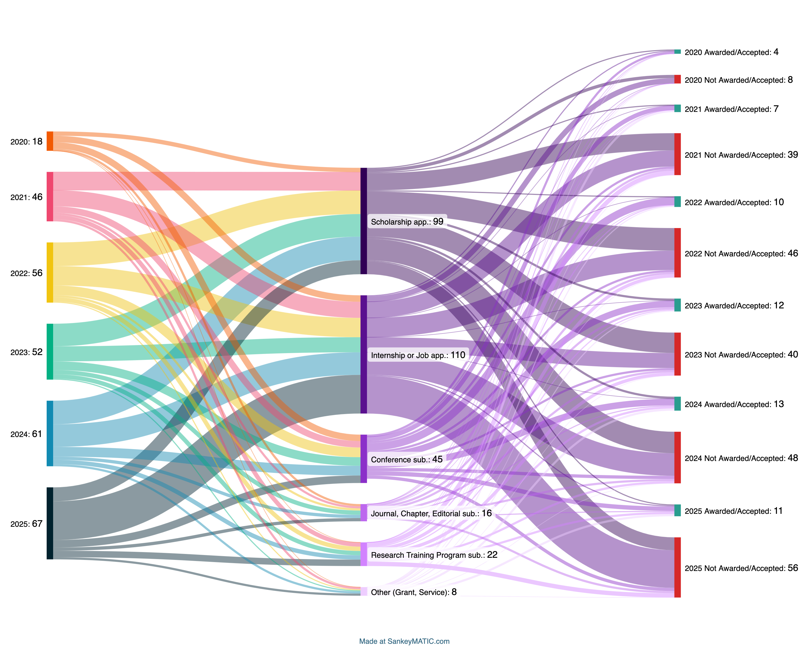

TLDR: I love collecting data about my interactions with the world. Here are a few, important (to me), stats from my PhD journey.
I started my Ph.D. journey nearly five years ago. In hindsight, I can easily say it was an adventure I enjoyed growing through, but also the pathway I hoped it would be to give me permission to work on interesting research and develop my skills as a scholar.
This spring marked the end of that journey, a milestone reached in what feels like no time at all. In the past year, I've been swept into a whirlwind of activities: finalizing the analysis for my dissertation's final study, networking and presenting at multiple conferences and doctoral consortia, navigating the academic job market, and completing the dissertation write-up itself. I also made it a point to enjoy my time in the DMV by exploring new restaurants, farmers markets, and importantly, cafés, tea shops, and coffee shops to keep me going through the writing.
I love collecting data, and what better way to summarize the past quinquennium than present a few interesting stats I've collected over this period. While my journey is unique, I hope these insights might offer you (potential student, faculty member, or just curious reader) something to think about. This is my narrative, not advice on the “correct” way (lol) to do a PhD, nor would I use this as a metric to compare to your own situation (your Costco hotdog and pizza intake should be a deeply personal decision). Think of it as a story from someone that loves applying to things, even when he feels not ready.
The data I present are drawn from a variety of tracking tools that I've developed and consistently used over the years.
A record of applications, submissions, and more
During my time at community college, I came across the phrase, though I can't remember who said it nor if it was an original quote: “If you're not getting rejected on a monthly basis, you're not applying enough or staying in the bounds of what people think you can do.” As someone who, until that point, was deeply afraid of being rejected, largely due to the implication of not being good enough, I was shook.
It is arguable to what extent the quote is true, and perhaps to some extent, this outlook could lead to aiming for toxic levels of productivity. What I can say is that the philosophy altered how I view my own capabilities and has encouraged me to think beyond where I am currently, and where I want to be next. In fact, I don't think I would have made it into the PhD program without it.
This philosophy guided my approach to applying to scholarships, programs, conferences, and more. I am proud of everything I have achieved, but I think it is important to acknowledge that there are many folders filled with applications, proposals, and more that didn't get funded. Such is part of the game. Figure 1 presents a breakdown of all collective applications and submissions I have made throughout my PhD.

PhD Milestone Timeline w/ Costco Hotdogs and Pizza Slice Intake
Next, I present a timeline of my PhD journey. A big part of getting away from my screens was finding a sweet or savory treat, and Costco hotdogs and pizza is perfectly budgeted for graduate students (both under $2).
I visualize the ups and downs of my PhD timeline through the Costco hot dogs and pizza slices I ate in Figure 2 (each image of hot dog or pizza slice represents 1 of said item). I especially gravitated towards these amazing delicacies leading up to major PhD milestones. I also believe this visualization represents my relative “stress” metric over the PhD (more hotdogs or pizza slices = higher stress).

Figure 3 is a reference photo of me with a hot dog.

Places for my head
Finally, I present a gallery of some coffee shops, bakeries, and generally great study spots in Virginia, Maryland, and DC I frequented to write, read, and decompress. I'm often asked what places I enjoyed going; here is my secret list.


{kind=link}
{kind=link}
{kind=link}
{kind=link}
{kind=link}
{kind=link}
{kind=link}
{kind=link}
{kind=link}
{kind=link}
{kind=link}